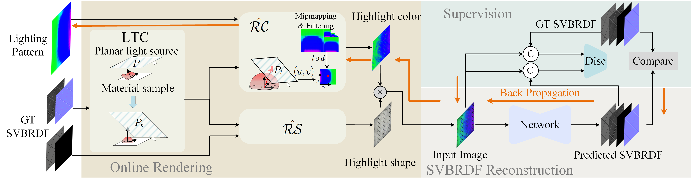

Abstract
Estimating spatially varying BRDF from a single image without complicated acquisition devices is a challenging problem. In this paper, a deep learning based method was proposed to improve the capture efficiency of single image significantly by learning the lighting pattern of a planar light source, and reconstruct high-quality SVBRDF by learning the global correlation prior of the input image. In our framework, the lighting pattern optimization is embedded in the training process of the network by introducing an online rendering process. The rendering process not only renders images online as the input of network, but also efficiently back propagates gradients from the network to optimize the lighting pattern. Once trained, the network can estimate SVBRDFs from real photographs captured under the learned lighting pattern. Additionally, we describe an onsite capture setup that needs no careful calibration to capture the material sample efficiently. In particular, even a cell phone can be used for illumination. We demonstrate on synthetic and real data that our method could recover a wide range of materials from a single image casually captured under the learned lighting pattern.
Pipeline

Our framework reconstructs SVBRDF from a single image lit with a planar light source. When training, the rendering process takes the ground truth SVBRDF as input and renders an image online. First, the BRDF distribution is transformed into clamped cosine distribution. The rendered image is then fed to the network for reconstructing the SVBRDF. Finally, under the supervision of the ground truth, the network parameters and lighting pattern are optimized jointly.
Capture Setup and Some Results

The material sample is captured with only a camera and a RGB LCD screen and without careful calibration. Here we show two SVBRDFs reconstructed by our method from a single image lit with the learned lighting pattern.
Results Video
Citation
@article{Zhang2023PlanarLighting,
author = {Lianghao Zhang, Fangzhou Gao, Li Wang, Minjing Yu, Jiamin Cheng, Jiawan Zhang},
title = {Deep SVBRDF Estimation from Single Image under Learned Planar Lighting},
year = {2023},
publisher = {ACM},
doi = {10.1145/3588432.3591559},
booktitle = {ACM SIGGRAPH 2023 Papers},
series = {SIGGRAPH '23}
}